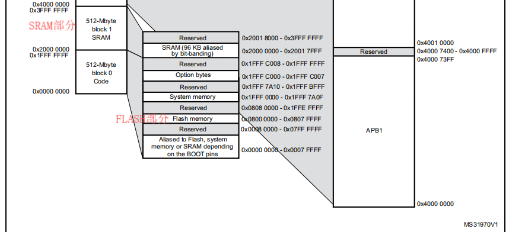
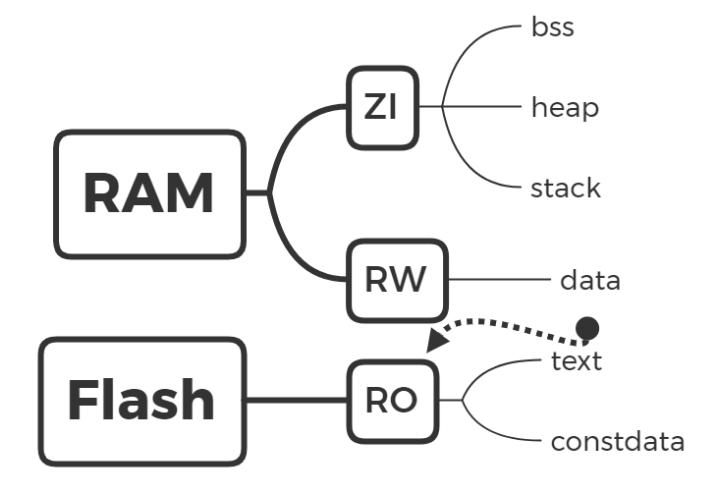
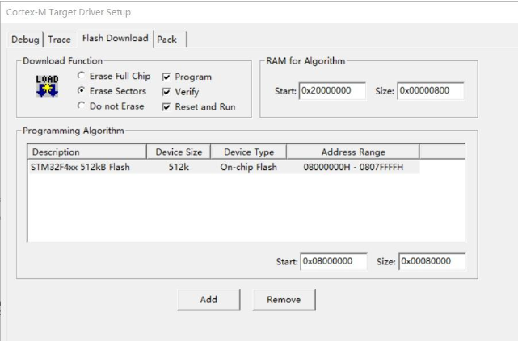
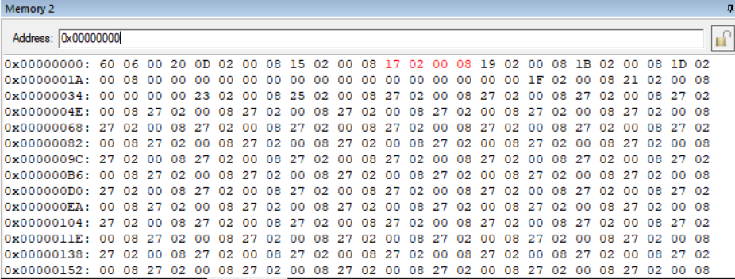
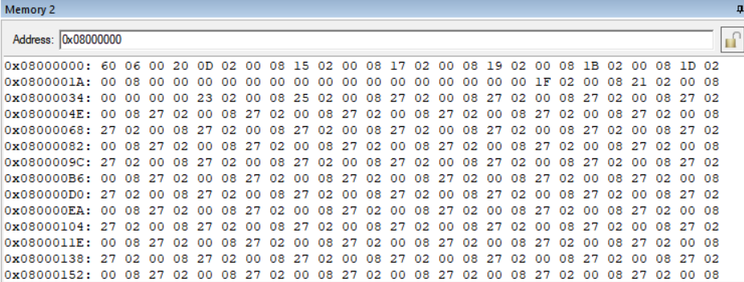
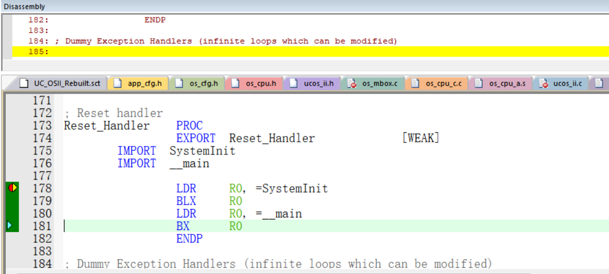

启动模式
stm32有多种启动模式，以STM32F4XX为例，如下图所示：

并非所有芯片都适用于这个表格，不同型号具体启动方式请参考对应手册,官方也有Bootloader介绍文档可以查看。
第一种启动方式
最常用的用户FLASH启动，正常工作就在这种模式下，STM32的FLASH可以擦除10万次，所以不用担心芯片哪天会被擦爆。
第二种启动方式
系统存储器启动方式，使用串口下载程序或者使用USB-DFU模式下载程序，不建议使用这种，速度比较慢。STM32 中自带的BootLoader就是在这种启动方式中，如果出现程序硬件错误的话可以切换BOOT0/1到该模式下重新烧写Flash即可恢复正常。
第三种启动方式
STM32内嵌的SRAM启动，一般该模式用于调试。 用J-Link在线仿真，则是下载到SRAM中。
启动文件
内存分布
STM32的数据在物理上分别储存在RAM和Flash中。
RAM可读可写，掉电清零。Flash可读可写，但是读写时间很长，能掉电储存，并且一般空间比RAM大很多。
下图是STM32F4XX的Memory Map,可以看到，其FLASH起始地址为0x0800 0000,大小为512KB
那么FLASH和RAM主要存储哪些数据呢？这里又涉及到了６个储存数据段和３种储存属性区的概念，可以参考这篇博客。
６个储存数据段
data 数据段，储存已初始化的，且初始化不为0的全局变量和静态变量。
bss Block Started by Symbol。储存未初始化的，或初始化为0的全局变量和静态变量。
|
|
text 用户的代码段，储存程序代码。
constdata 储存只读常量。
heap 堆，存放进程运行中被动态分配的内存段。其可用大小定义在启动文件startup_stm32fxx.s中，由程序员使用malloc()和free()函数进行分配和释放。
stack 栈，其大小定义在启动文件startup_stm32fxx.s中，由系统自动分配和释放。可存放局部变量、函数的参数和返回值，中断发生时能保存现场。但是static声明的局部静态变量不储存在栈中，而是放在data数据段。
3种储存属性区
RO(Read Only) 烧写到Flash中，可以长久保存。text代码段和constdata都属于RO。由于需要掉电储存，RO里也保存了一份data的数据。
RW(Read Write) 储存在RAM中。data属于此区。上电时单片机会将Flash中保存的data类型数据复制到RAM中，以供读写使用。
ZI(Zero Init) 零初始化区，同样储存在RAM里。系统上电时会把此区域的数据进行0初始化。bss，heap，stack均属于这个区域。
小结
链接时记录bss段大小，装载（后续会提到）时分配空间
FLASH：Code + RO-Data + RW-Data（运行时搬运到RAM里面）
SRAM： RW-Data + ZI-Data
代码详解
打开startup_stm32f40_41xxx.s文件，我们可以查看详细启动文件代码。
|
|
分配了一段大小为1KB的栈空间，段名STACK，可读写，ALIGN=3表示2^3=8字节对齐，"_ _initial_sp"紧挨着栈的结束地址，由于栈是从高往低生长，所以"__initial_sp"的位置就是栈顶。
|
|
分配了一段大小为512字节的堆空间，段名HEAP，可读可写，8字节对齐，__heap_base和__heap_limit分别是堆的起始地址和结束地址。
|
|
指定当前文件的堆栈按照8字节对齐，后面指令兼容16位的Thumb指令。Cortex-M内核实际使用的是Thumb-2指令集，将16位与32位指令混合使用。
|
|
定义了一个数据段，名为DATA，仅可读。
上文为堆栈分配的空间均位于SRAM中，不占用代码空间，从这个数据段开始才是stm32代码空间的起始位置，先定义并初始化了栈顶位置（_ _initial_sp）以及15个内核异常处理函数的入口地址，接下来是外部中断，最后用结束地址减去开始地址得到__Vectors_Size即本数据段的大小。
|
|
reset_handler即复位程序的实际执行代码，上电或是复位都会先从这里开始执行然后进入main函数，具体的执行过程暂且按下不表，我们继续看启动文件的后续内容。
|
|
将除了reset_handler外的内核异常都分别写成无限循环（B .）的弱函数，外部中断也是如此，只是函数起始位置都是同一个地址。
|
|
如果使用了microlib则将栈顶地址和堆的起始、结束地址export出去，microlib会进行堆栈初始化的操作，若是没有使用，则堆栈初始化时会使用__user_initial_stackheap函数。
启动流程
地址映射
STM32的代码是烧写到flash中的，通过查询手册可知，STM32F401XX的flash的起始地址是0x08000000；当然通过KEIL已配置好的工程也能查看flash信息：
但是Cortex-M内核规定上电后必须从0x00000000的位置开始执行，这就需要一个地址映射的操作，不论stm32的启动模式是本文开头说的哪一种，都会将该启动区域的代码映射到0x00000000的位置，进入keil的调试模式打开memory窗口，输入查看0x00000000和0x08000000：
 我们可以发现数据是完全相同的。
通过地址映射机制，同一份代码可通过硬件配置在不同启动模式下运行，用户不需要关心物理地址的具体位置，只需使用链接脚本将代码和数据分配到正确的地址区域。例如，中断向量表默认放在Flash的起始位置，但通过VTOR寄存器可以重定位到SRAM，这种灵活性在调试或需要动态加载代码时非常有用，从而提高了开发效率
硬件自动为MSP和PC赋值,开始执行reset_handler
分析启动代码时我们提到过，从DATA段开始才是代码段的起始位置，那么0x08000000作为起始地址的4字节空间存储的就是__initial_sp的地址，即栈顶地址，上电或复位后，硬件会自动将该地址赋给MSP，即主栈指针，随后将0x08000004作为起始地址的4字节空间内容，也就是reset_handler函数入口地址赋给PC。
此时程序会立刻去执行reset_handler，让我们回过头来看看reset_handler中做了些什么：
|
|
可以看到，reset_handler中执行了两个程序，SystemInit和**__main**。
System_Init
不同型号芯片的默认systeminit函数有所区别，内容往往是初始化时钟、FPU等。
用户没有重写"_ _main"的情况下，该函数并不在库文件中，而是由armlink创建，如果想要在keil调试的时候查看__main的具体执行过程，需要在BX R0指令运行前点击汇编代码的内容框，再继续单步执行，则可以看到 _ _main的汇编代码，否则会直接跳进main函数。
__main
_ _main中调用了 _ _scatterload和 _ _rt_entry两个函数：
__scatterload(分散加载)
默认的__scatterload函数做了两件事：
1.将ZI段数据全部初始化为0
2.将“非根区域”的数据从加载域复制到执行域（将可读可写的数据搬运到RAM）
在keil工程目录下的${工程名}.sct文件中可以查看加载域和执行域的地址以及数据存储位置：
|
|
可以看到，加载域的地址就是flash的地址，且只读的数据（RO、XO）放在flash（0x08000000–0x08080000）中，可读可写的数据（RW、ZI）放在RAM（0x20000000–0x20018000）中。
__rt_entry
_ _scatterload函数执行完后接着调用 _ _rt_entry， _ _rt_entry又调用了如下函数：
|
|
其中__user_setup_stackheap就是启动文件末尾的函数，如果没有使用microlib的话就会调用它。
__rt_entry负责初始化堆栈以及C语言库子系统，即C语言代码运行所必需的环境，随后万事俱备，就可以跳入main函数执行C语言代码了。
当然，如果没有在main函数中写死循环的话，main函数执行完了后会到达exit退出程序。
总结
总结一下，芯片上电第一件事是把代码空间的第一行，即栈顶指针赋给msp，随后将第二行reset_handler的入口地址赋给pc，使程序立刻跳转去执行reset_handler，在reset_handler中先初始化时钟、FPU等硬件相关配置（具体内容根据芯片型号有所不同），再初始化ZI段，将代码和数据从加载域搬运到执行域，随后初始化堆栈和C语言库子系统，使得C语言代码能够正常运行，最后跳入main函数执行用户编写的C程序。